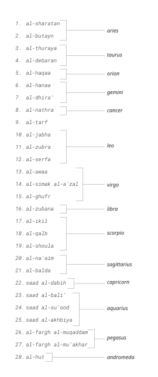

2
Houses of the Moon
Houses of the Moon
The upcoming exploration, Houses of the Moon, is a study of lunar stations, or where the moon seems to mark the night sky, and the intricate environmental logic they chart over time.
They hold immense historical, navigational, and poetic significance, and these movements shaped the temporal and spatial frameworks we are familiar with today.
A star, alone, is like a number. It rarely will mean anything on its own. But when you draw a string, or find a pattern, or follow a sequence, you are creating meaning within it, a gestalt-like logic inherent to understanding nature.
For this project, I chose the stars that make up the “stations” or the “mansions.” Essentially, the sun’s path through the sky is called the ecliptic. That path crosses many stars, and those stars (called the stations, houses, or mansions) serve as checkpoints to measure the progress of the sun along its path throughout the year.
There are 28 of these stars. The sun spends approximately 13 days in each station before moving on to the next. The moon only spends a day in each before slipping to the next, which is why it tends to be more accurate. Nevertheless.
The sun’s path has 28 different checkpoints. You can watch out for which star we’re in by looking for the rising star right before sunrise, also called the “heliacal rising.” That star will change every 13 days. By the end of the year, all 28 stations have cycled through, and the system resets with the first star.
This method of timekeeping was used by almost every civilization. If you’ve ever wondered what the zodiac signs or horoscopes are, they are also trackers of the sun’s path. Except they are grouped into 12 instead of 28. Each zodiac sign holds two or three of the stations, so the stations are just more specific points within them to get a more accurate read of the sky.
These 28 stars are:

This page is still being updated...